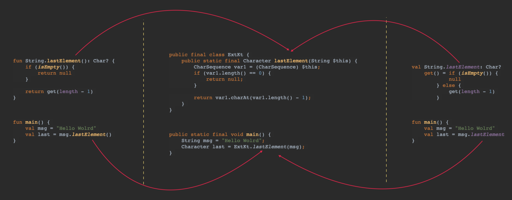
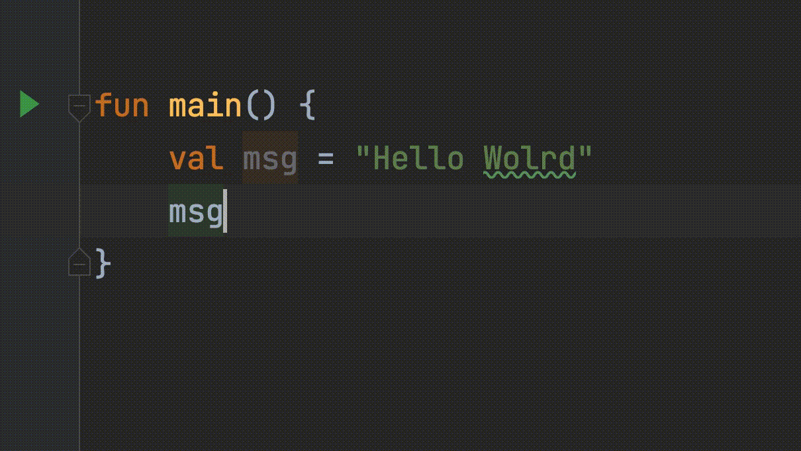
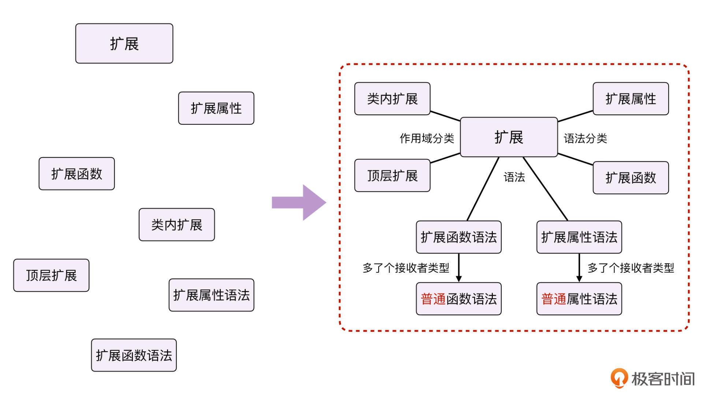
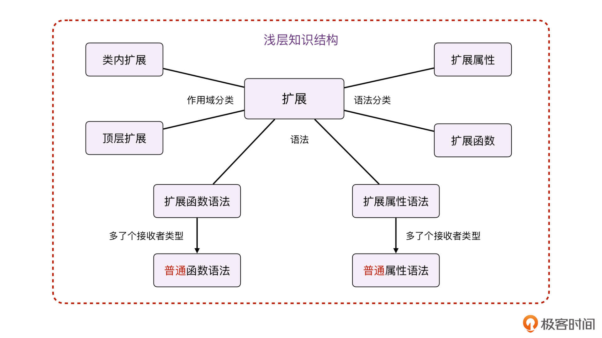
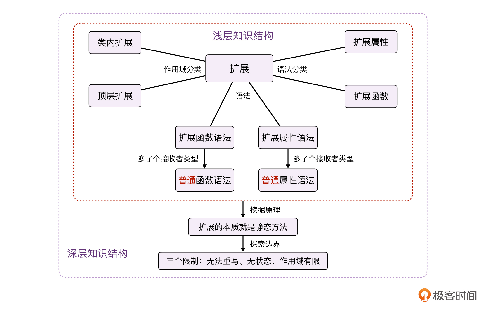
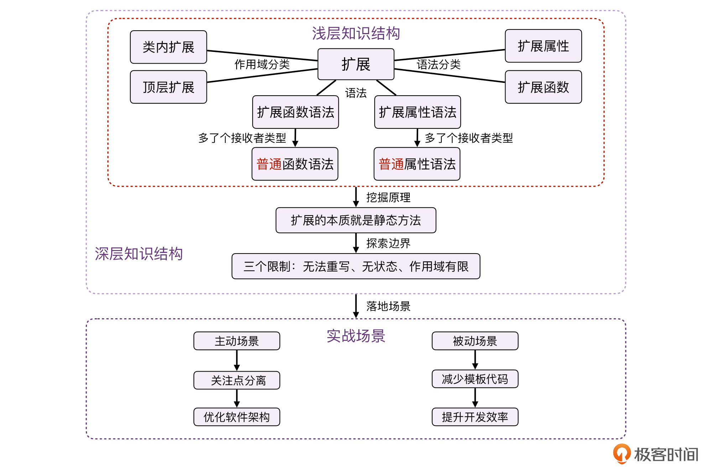

Audio扩展：你的能力边界到底在哪里？
你好，我是朱涛。
Kotlin 的扩展（Extension），主要分为两种语法：第一个是扩展函数，第二个是扩展属性。从语法上看，扩展看起来就像是我们从类的外部为它扩展了新的成员。
这在实际编程当中是非常有用的功能。我们可以来想象一个场景：我们想修改 JDK 当中的 String，想在它的基础上增加一个方法“lastElement()”来获取末尾元素，如果使用 Java，我们是无法通过常规手段实现的，因为我们没办法修改 JDK 的源代码。任何第三方提供的 SDK，我们都无权修改。
不过，借助 Kotlin 的扩展函数，我们就完全可以在语义层面，来为第三方 SDK 的类扩展新的成员方法和成员属性。不管是为 JDK 的 String 增加新的成员方法，还是为 Android SDK 的 View 增加新成员属性，我们都可以实现。
Kotlin 的这个“扩展”功能看起来很神奇，它会不会很难学？其实不然，它的语法非常简洁。今天这节课，我们就一起来学习下 Kotlin 当中的扩展。通过研究它的原理，来探索它的能力边界，并在理解和掌握核心知识点之后，去思考它的实战应用场景。
什么是扩展函数和扩展属性？
扩展函数，就是从类的外部扩展出来的一个函数，这个函数看起来就像是类的成员函数一样。这里，我们就以 JDK 当中的 String 为例，来看看如何通过 Kotlin 的扩展特性，为它新增一个 lastElement() 方法。
// Ext.kt
package com.boycoder.chapter06
/*
① ② ③ ④
↓ ↓ ↓ ↓ */
fun String.lastElement(): Char? {
// ⑤
// ↓
if (this.isEmpty()) {
return null
}
return this[length - 1]
}
// 使用扩展函数
fun main() {
val msg = "Hello Wolrd"
// lastElement就像String的成员方法一样可以直接调用
val last = msg.lastElement() // last = d
}我们先是定义了一个 String 的扩展函数“lastElement()”，然后在 main 函数当中调用了这个函数。并且，这个扩展函数是直接定义在 Kotlin 文件里的，而不是定义在某个类当中的。这种扩展函数，我们称之为“顶层扩展”，这么叫它是因为它并没有嵌套在任何的类当中，它自身就在最外层。
现在，我们依次来看看上面的五处注释。
注释①，fun关键字，代表我们要定义一个函数。也就是说，不管是定义普通 Kotlin 函数，还是定义扩展函数，我们都需要 fun 关键字。
注释②，“String.”，代表我们的扩展函数是为 String 这个类定义的。在 Kotlin 当中，它有一个名字，叫做接收者（Receiver），也就是扩展函数的接收方。
注释③，lastElement()，是我们定义的扩展函数的名称。
注释④，“Char?”，代表扩展函数的返回值是可能为空的 Char 类型。
注释⑤，“this.”，代表“具体的 String 对象”，当我们调用 msg.lastElement() 的时候，this 就代表了 msg。
需要注意的是，在整个扩展函数的方法体当中，this 都是可以省略的。这一点，Kotlin 和 Java 是一样的，this 代表当前作用域，它可写可不写。
另外，如果你足够细心的话，你会发现如果去掉注释②处的“String.”，这段代码就会变成一个普通的函数定义：
fun lastElement(): Char? {}
fun String.lastElement(): Char? {}
// 普通函数与扩展函数之间的差别换句话说，就是如果我们在普通函数的名称前面加上一个“接收者类型”，比如“String.”，Kotlin 的“普通函数”就变成了“扩展函数”。
可见，Kotlin 扩展语法设计得非常巧妙，只要你记住了普通函数的语法，那么，只需要再记住一点点细微的区别，你就能记住扩展函数的语法。而通过这个细微的语法差异，你也可以体会到，所谓的扩展函数，就是多了个“扩展接收者”的函数。
扩展函数的实现原理
在第 3 讲中，我们学习了如何研究 Kotlin 的原理，也就是通过 Java 字节码来做反编译。那么在这里，我们就以刚才写的 lastElement() 为例，一起来看看它反编译后的 Java 代码是什么样的。
public final class ExtKt {
// ①
public static final Character lastElement(String $this) {
CharSequence var1 = (CharSequence)$this;
if (var1.length() == 0) {
return null
}
return var1.charAt(var1.length() - 1);
}
}
public static final void main() {
String msg = "Hello Wolrd";
// ②
// ↓
Character last = ExtKt.lastElement(msg);
}以上代码有两个地方需要注意，我分别用两个注释标记出来了。
通过第一个注释，我们可以看到，原本定义在 String 类型上面的扩展函数 lastElement()，变成了一个普通的静态方法。另外，之前定义的扩展函数 lastElement() 是没有参数的，但反编译后的 Java 代码中，lastElement(String $this) 多了一个 String 类型的参数。
还有第二个注释，这是扩展函数的调用处，原本 msg.lastElement() 的地方，变成了 ExtKt.lastElement(msg)。这说明，Kotlin 编写的扩展函数调用代码，最终会变成静态方法的调用。
看到这里，也许你一下就能反应过来：Kotlin 的扩展函数只是从表面上将 lastElement() 变成 String 的成员，但它实际上并没有修改 String 这个类的源代码，lastElement() 也并没有真正变成 String 的成员方法。
也就是说，由于 JVM 不理解 Kotlin 的扩展语法，所以 Kotlin 编译器会将扩展函数转换成对应的静态方法，而扩展函数调用处的代码也会被转换成静态方法的调用。
而如果我们将上面的 ExtKt 修改成 StringUtils，它就变成了典型的 Java 工具类。
public final class StringUtils {
public static final Character lastElement(String $this) {
// 省略
}
}
public static final void main() {
Character last = StringUtils.lastElement(msg);
}如何理解扩展属性？
在学习了 Kotlin 的扩展函数以后，扩展属性就很好理解了。扩展函数，是在类的外部为它定义一个新的成员方法；而扩展属性，则是在类的外部为它定义一个新的成员属性。
那么，在研究了扩展的实现原理后，我们知道，我们从外部定义的成员方法和属性，都只是语法层面的，并没有实际修改那个类的源代码。
还是以 lastElement 为例，在之前的案例当中，我们是通过扩展函数来实现的，这次我们以扩展属性的方式来实现。扩展函数的定义对比普通函数，其实就只是多了一个“接收者类型”。类似的，扩展属性，也就是在普通属性定义的时候多加一个“接收者类型”即可。
// 接收者类型
// ↓
val String.lastElement: Char?
get() = if (isEmpty()) {
null
} else {
get(length - 1)
}
fun main() {
val msg = "Hello Wolrd"
// lastElement就像String的成员属性一样可以直接调用
val last = msg.lastElement // last = d
}在这段的代码中，我们为 String 类型扩展了一个新的成员属性“lastElement”。然后在 main 函数当中，我们直接通过“msg.lastElement”方式使用了这个扩展属性，就好像它是一个成员一样。而如果你将以上的代码进行反编译，你会发现它反编译后的 Java 代码几乎和我们前面扩展函数的一模一样。
为了让你看得更加清晰，我们用一张图来描述它们之间的关系。

上面的两个箭头，说明了扩展函数与扩展属性，它们最终会被 Kotlin 编译器转换成静态方法；下面两个箭头，说明了扩展函数和扩展属性的调用代码，最终会被 Kotlin 编译器转换成静态方法的调用。
所以也就是说，Kotlin 的扩展表面上看起来是为一个类扩展了新的成员，但是本质上，它还是静态方法。而且，不管是扩展函数还是扩展属性，它本质上都会变成一个静态的方法。那么，到底什么时候该用扩展函数，什么时候该用扩展属性呢？
其实，我们只需要看扩展在语义上更适合作为函数还是属性就够了。比如这里的 lastElement，它更适合作为一个扩展属性。这样设计的话，在语义上，lastElement 就像是 String 类当中的属性一样，它代表了字符串里的最后一个字符。
扩展的能力边界
在理解了扩展的使用与原理后，我们再来探讨一下扩展的能力边界：扩展能做什么，不能做什么。Kotlin 的扩展看起来很神奇，但它并不是无所不能的，通过探索它的能力边界，我们就能对它有一个更加深入的认识。
扩展能做什么？
我们先从“扩展能做什么”说起。
当我们想要从外部为一个类扩展一些方法和属性的时候，我们就可以通过扩展来实现了。在 Kotlin 当中，几乎所有的类都可以被扩展，包括普通类、单例类、密封类、枚举类、伴生对象，甚至还包括第三方提供的 Java 类。唯有匿名内部类，由于它本身不存在名称，我们无法指定“接收者类型”，所以不能被扩展，当然了，它也没必要被扩展。
可以说，Kotlin 扩展的应用范围还是非常广的。它最主要的用途，就是用来取代 Java 当中的各种工具类，比如 StringUtils、DateUtils 等等。
所有 Java 工具类能做的事情，Kotlin 扩展函数都可以做，并且可以做得更好。扩展函数的优势在于，开发工具可以在编写代码的时候智能提示。

扩展不能做什么？
我们再聊聊扩展不能做什么。
Kotlin 的扩展，由于它本质上并没有修改接收类型的源代码，所以它的行为是无法与“类成员”完全一致的。那么它对比普通的类成员，就会有以下几个限制。
第一个限制，Kotlin 扩展不是真正的类成员，因此它无法被它的子类重写。举个例子，我们定义一个这样的 Person 类，并且分别为它扩展了一个 isAdult 属性和 walk() 方法：
open class Person {
var name: String = ""
var age: Int = 0
}
val Person.isAdult: Boolean
get() = age >= 18
fun Person.walk() {
println("walk")
}由于 Person 类有 open 关键字修饰，所以我们可以继承这个 Person 类。不过，当我们尝试去重写它的成员时，会发现 isAdult 和 walk() 是无法被重写的，因为它们压根就不属于 Person 这个类。这个很好理解，让我们看下一个。
第二个限制，扩展属性无法存储状态。就如前面代码当中的 isAdult 属性一般，它的值是由 age 这个成员属性决定的，它本身没有状态，也无法存储状态。这一点，和我们在第 2 讲学习的“接口成员属性”一样，背后的根本原因，还是因为它们都是静态方法。
第三个限制，扩展的访问作用域仅限于两个地方。第一，定义处的成员；第二，接收者类型的公开成员。我们以前面的代码为例：
// Ext.kt
package com.boycoder.chapter06
// ①
private val msg: String = ""
fun String.lastElement(): Char? {
if (this.isEmpty()) {
// ②
// ↓
println(msg)
return null
}
// ③
// ↓
return this[length - 1]
}这段代码一共有三处注释，我们一个个看：
在注释①的地方，我们在 Ext 这个 Kotlin 文件里定义了一个私有的变量 msg。
由于 lastElement() 与 msg 是定义在同一个文件当中的，因此，在注释②处我们可以直接访问 msg，即使它是私有的。
最后，是注释③，由于 length 是 String 类的公开属性，因此我们可以在扩展函数当中直接访问它。对应的，如果 length 是 String 的 private、protected 成员，那我们将无法在扩展函数当中访问它。归根结底，还是因为扩展函数并非真正的类成员。
看到这里，也许你会冒出一个有趣的想法：如果将扩展定义在某个类的内部，它能够访问这个类的私有属性吗？
让我们来试试看：
open class Person {
var name: String = ""
var age: Int = 0
}
class Helper {
private fun walkOnFoot() {
println("用脚走路")
}
val Person.isAdult: Boolean
get() = age >= 18
fun Person.walk() {
// 调用了Helper的私有方法
walkOnFoot()
}
fun test() {
val person = Person()
// 仅可以在Helper类当中使用此扩展
person.walk()
}
}我们创建了一个 Helper 类，它内部有一个私有的成员方法，同时，我们在这个类的内部定义了一个扩展属性和一个扩展函数。可以看到，我们在扩展函数 walk() 方法当中，能直接调用 Helper 类的私有成员方法 walkOnFoot()，这体现了类的内部定义扩展的优势。
但是与此同时，这种方式定义的扩展也存在一个劣势，那就是无法在 Helper 类的外部作为扩展被调用。如果你将上面的代码反编译成 Java，你会发现，我们定义的内部扩展，最终都变成了 Helper 类的普通成员函数和成员属性。
所以，针对扩展的第三个限制来说：
如果扩展是顶层的扩展，那么扩展的访问域仅限于该 Kotlin 文件当中的所有成员，以及被扩展类型的公开成员，这种方式定义的扩展是可以被全局使用的。
如果扩展是被定义在某个类当中的，那么该扩展的访问域仅限于该类当中的所有成员，以及被扩展类型的公开成员，这种方式定义的扩展仅能在该类当中使用。
实战与思考
到这里，我们就了解了 Kotlin 的扩展，包括扩展函数、扩展属性以及扩展的实现原理，同时我们也在了解它原理的基础上分析了它的能力边界。
不过，即使在学习完上面所有的知识点后，你也许还是不太清楚 Kotlin 扩展的实际使用场景。所以下面，我再带你来看两个案例，这两个工业界的实际案例，可以完美地向你展示 Kotlin 扩展的两个核心使用场景。你可以通过学习这两种思路，将其运用在实际的工作当中。
// String.kt
public class String : Comparable<String>, CharSequence {
companion object {}
public operator fun plus(other: Any?): String
public override val length: Int
public override fun get(index: Int): Char
public override fun subSequence(startIndex: Int, endIndex: Int): CharSequence
public override fun compareTo(other: String): Int
}你一定会很惊讶，Kotlin 里面的 String 类竟然只有不到十行代码。那么，String 类的那些字符操作的方法到哪里去了？比如，String.trim()、String.lowercase() 它们定义在什么地方？
// Strings.kt 部分代码
public fun CharSequence.trim(): CharSequence = trim(Char::isWhitespace)
public expect fun String.lowercase(): String那么，Kotlin 官方能不能将“字符操作方法”放到 String 类当中合并到一起呢？源代码是 Kotlin 官方写的，他们当然能将所有的代码都合并到一个类当中去，形成一个几千行的 String 类，但他们却没有这么做。这是为啥呢？
这就是 Kotlin 扩展的第一个典型使用场景：关注点分离。所谓关注点分离，就是将我们程序的逻辑划分成不同的部分，每一个部分，都只关注自己那部分的职责。以上面的 String 类为例，String.kt这个类，只关注 String 的核心逻辑；而Strings.kt则只关注 String 的操作符逻辑。
需要注意的是，只有借助 Kotlin 的扩展，我们才能实现这样的关注点分离设计。如果你去看 Java 的 String 类，你会发现它的源代码有三千多行。这是因为，Java 的 String 核心属性跟它的操作方法全都混合在了一起。
第二个代码案例，是我工作当中用到的一段 Android 扩展函数代码：
inline fun <reified T : ViewGroup.LayoutParams> View.updateLayoutParams(block: T.() -> Unit) {
val params = layoutParams as T
block(params)
layoutParams = params
}
fun View.updateMargin(left: Int? = null, top: Int? = null, right: Int? = null, bottom: Int? = null) {
(layoutParams as? ViewGroup.MarginLayoutParams)?.let { param ->
updateLayoutParams<ViewGroup.MarginLayoutParams> {
left?.let {
marginStart = left
}
right?.let {
marginEnd = right
}
top?.let {
topMargin = top
}
bottom?.let {
bottomMargin = bottom
}
}
}
}上面的代码定义了两个扩展函数，updateLayoutParams()、updateMargin()，后者的方法体当中用到了前者。通过 updateMargin() 这个扩展函数，可以大大简化 Android 当中的 margin 更新。
view.updateMargin(top = 100, bottom = 100)而如果不借助扩展函数，我们将不得不写一堆的模板代码：
val params = view.layoutParams
if (params is ViewGroup.MarginLayoutParams) {
params.marginTop = 100
params.marginBottom = 100
view.layoutParams = params
}可以看到，借助扩展函数，我们不仅提升了代码的可读性，还提升了编码效率，而这种效率可以说是成倍的提升：借助扩展函数，我们只需要写一行代码，IntelliJ 还会智能提示，帮我们补全代码；不借助扩展函数的话，我们需要写 5 行代码，这样的代码模式不仅枯燥繁琐，IntelliJ 也无法智能提示，也更容易出错。
我们来小结一下，Kotlin 扩展主要有两个核心使用场景。
主动使用扩展，通过它来优化软件架构。
被动使用扩展，提升可读性与开发效率。
当我们无法修改外部的 SDK 时，对于重复的代码模式，我们将其以扩展的方式封装起来，提供给对应的接收者类型，比如 view.updateMargin()。
小结
好，让我们来做个简单的总结吧。
Kotlin 的扩展，从语法角度来看，分为扩展函数和扩展属性。定义扩展的方式，只是比普通函数、属性多了一个“扩展接收者”而已。
从作用域角度来看，分为顶层扩展和类内扩展。
从本质上来看，扩展函数和扩展属性，它们都是 Java 静态方法，与 Java 当中的工具类别无二致。对比 Java 工具类，扩展最大的优势就在于，IDE 可以为我们提供代码补全功能。
从能力的角度来看，Kotlin 扩展一共有三个限制，分别是：扩展无法被重写；扩展属性无法存储状态；扩展的作用域有限，无法访问私有成员。
从使用场景的角度来看，Kotlin 扩展主要有两个使用场景，分别是：关注点分离，优化代码架构；消灭模板代码，提高可读性和开发效率。
最后在这里，我还想和你分享一下我在学 Kotlin 扩展的思考过程，希望这种思考的方式可以给你带来一些启发。
刚开始，我学习扩展的时候，脑子里其实是一片混乱的，就像下面这张图一样：扩展的每一个知识点都是散乱的。
这时候，我们就要将这些知识点做一个分类整理，同时，在学习扩展语法的时候，还要与前面的普通函数、普通属性的语法进行关联记忆。这样一来，我们零散的知识点就连接到一起，形成体系化的知识面。

当我们的知识形成一个体系之后，记忆起来就很容易了，这样，一个简单的浅层知识结构就形成了。

接着，在这个基础上，我们再进行深度的思考，去探索扩展的底层原理，还有它的能力边界，从而形成一个更加深层次的知识结构。

到目前为止，这些都是理论层面的一些知识，我们还需要进一步探索 Kotlin 扩展的实际应用场景。这时候，就会发现它的两个主要使用场景，一个是主动的，一个是被动的。

其实，学习就是一个不断向下挖掘探索的过程。学习 Kotlin 是这样，学习其他计算机知识也是这样，甚至学习其他领域的知识也是这个道理。
思考题
在这节课中的所有案例中，我们的“扩展接收者”都是不为空的类型。但实际上，Kotlin 的扩展是允许我们为“可为空的类型”进行扩展的。比如说：
// 不为空的接收者类型
// ↓
fun String.lastElement(): Char? {}
// 可为空的接收者类型
// ↓
fun String?.lastElement(): Char? {}那么，请问这两种扩展有什么不同？欢迎在评论区分享你的思路，我们下节课再见。
COMMUNITY NOTES
读者评论
这篇文章暂时没有读者留言。